<ion-header [translucent]="true">
  <ion-toolbar>
    <ion-title>
      Gruppi
    </ion-title>
  </ion-toolbar>
</ion-header>


<ion-content [fullscreen]="true">
  <div class="bicolor">

    
    <div *ngIf="central.error"
      style=" padding:1em ;text-align: center; color: white; background-color: rgb(255, 115, 115);">
      ERROR
      <ion-icon name="close-circle-outline" (click)="central.error = null"
        style="margin-left: 5px; cursor: pointer;"></ion-icon>
    </div>

    <div style="display: flex; flex-wrap: wrap;">

      <button id="new-group-btn" class="purple-btn">
        <ion-icon name="add-outline"></ion-icon>
          aggiungi un nuovo gruppo</button>
      <ion-popover trigger="new-group-btn">
        <ng-template>
          <ion-content class="ion-padding">
            <form #f="ngForm" (submit)="central.addGroup(f)" class="example-form">
              <mat-form-field class="example-full-width">
                <mat-label>Nome</mat-label>
                <input matInput placeholder="Es. Mario" name="name" [ngModel] required>
              </mat-form-field>

              <mat-form-field class="example-full-width">
                <mat-label>Ruolo</mat-label>
                <input matInput placeholder="Es. 0" name="role" [ngModel] required>
              </mat-form-field>

              <mat-form-field class="example-full-width">
                <mat-label>Descrizione</mat-label>
                <input matInput placeholder="Es. gruppo del dopolavoro" name="description" [ngModel] >
              </mat-form-field>

              <button class="purple-btn" type="submit" style="margin: 0;">
                Conferma
                <ion-icon style="font-size: 120%;" name="checkmark-circle-outline"></ion-icon>
              </button>
            </form>

          </ion-content>
        </ng-template>
      </ion-popover>

    </div>

    <table>
      <tr class="labels">
        <th *ngFor="let i of central.groups_labels">
          <div class="sticker">
            <ion-icon name="folder-open-outline"></ion-icon>
          </div>
          <span>{{i}} </span>
        </th>
      </tr>
      <tr *ngFor="let i of central.groups" class="tr-bg">
        <td [routerLink]="['tabs/tab1/infogroup', i.id]">{{i.id}}</td>
        <td [routerLink]="['tabs/tab1/infogroup', i.id]">Gruppo {{i.name}}</td>
        <td [routerLink]="['tabs/tab1/infogroup', i.id]" class="pdr">{{i.description}}</td>
        <td class="pl-5" [routerLink]="['tabs/tab1/infogroup', i.id]">{{i.role}}</td>
        <td (click)="central.deleteGroups(i)">
          <ion-icon *ngIf="i.role > 4 || i.role === null ? 'none' : null" class="trash" name="trash-outline" [style.display]=""></ion-icon>
        </td>
      </tr>
    </table>
  </div>
</ion-content>
